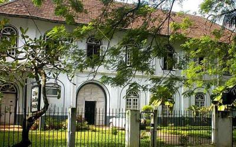
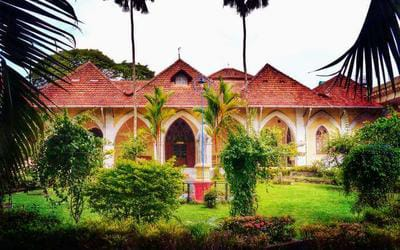

Ernakulam bordering the district of Thrissur in the north, Idukki in the East, Alapuzha and Kottayam in the south, Lakshadweep Sea in the west is an amalgam of a hoary heritage and global growth of industry and commerce. For the outside world, Ernakulam is part of Kochi referred to in the history of Kerala as the Queen of Arabian Sea. The densely populated Ernakulam District embodies the achievements of the Kerala State in literacy, industry, trade and commerce. With an inclusive culture, relatively high per capita income and an unstoppable interest of the people in updating themselves of the political, economic, social and cultural happenings in the national and international spheres, Ernakulam represents the high modern phase of the Kerala society.Initially, Kochi was an obscure fishing village that later on became the first European township in India. The town was shaped by the Portuguese, the Dutch and later the British. The result of these cultural influences are seen in the many examples of Indo European architecture that still exist here. Some of the well known tourist attractions in Kochi are the Chinese fishing nets,Vasco House,Parade grounds, Cochin club,Jew town,Cherai beach, etc.

